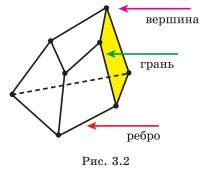

Усю сукупність точок, які розглядають у стереометрії, називають простором. Фігурою (або фігурою в просторі) називатимемо довільну множину точок, розташованих у просторі. Зокрема, це всі фігури, розміщені в якій-небудь площині, у тому числі і сама ця площина.
Отже, плоскі фігури також є просторовими фігурами. Тому основними властивостями плоских фігур, відомими з курсу планіметрії, ми користуватимемося і в стереометрії.Проте в стереометрії найважливішими є просторові фігури, що не лежать цілком ні в одній площині, неплоскі фігури.З деякими простими неплоскими фігурами ви ознайомилися в курсігеометрії 9 класу. До них відносять (рис. 3.1): куб (а); прямокутний паралелепіпед (б); призму (в); піраміду (г–ґ); конус (д); циліндр (е); кулю (є).Деякі фігури в просторі ще називають тілами. Наочно геометричне тіло можна уявити собі як частину простору, що займає фізичне тіло, обмежене деякою поверхнею. Наприклад, поверхня кулі — сфера — складається з усіх точок простору, віддалених від однієї точки — центра — на відстань, що дорівнює радіусу. Ця поверхня обмежує кулю, яка складається з усіх точок простору, які віддалені від однієї точки — центра — на відстань, що не перевищує радіуса.
Куб, паралелепіпед, призма і піраміда є многогранниками. Строге означення многогранника дамо в 11 класі. Проте оскільки ми почнемо працю вати з деякими видами многогранників у 10 класі, то нагадаємо означення, відомі вам з курсу геометрії 9 класу, що спираються на наочно-інтуїтивні уявлення.
Многогранником називатимемо обмежене тіло, поверхня якого складається зі скінченного числа плоских многокутників. Кожний із цих многокутників називають гранню многогранника, сторони многокутників — ребрами многогранника (рис. 3.2). Вершинами многогранника називають вершини його граней. Відрізок, що сполучає вершини многогранника, які не належать одній грані, називають діагоналлю многогранника.
Нагадаємо, що всі грані куба — квадрати, а всі грані прямокутного паралелепіпеда — прямокутники.Многогранник, дві грані якого — рівні п-кутники, а всі інші п граней — паралелограми, називають п-кутною призмою. Рівні п-кутники називають основами призми, а паралелограми — бічними гранями. Куб і прямокутний паралелепіпед є частковими випадками чотирикутної призми.
Пірамідою називається многогранник, одна з граней якого плоский многокутник, а решта граней — трикутники, що мають спільну вершину (див. рис. 3.1, г–ґ). Трикутні грані називаються бічними гранями піраміди, спільна вершина бічних граней — вершиною піраміди, а многокутник — основою піраміди. Відрізки, що сполучають вершину піраміди з вершинами її основи, називаються бічними ребрами піраміди. Піраміда називається п-кутною, якщо її основою є п-кутник. Піраміда називається правильною, якщо її основою є правильний многокутник, а всі бічні ребра рівні. Наприклад, якщо в піраміді SABCDEF (див. рис. 3.1, ґ) ABCDEF — правильний шестикутник і SA = SB = SC = SD = SE = SF, то це правильна шестикутна піраміда.Трикутну піраміду іноді називають тетраедром (див. рис. 3.1, г). Тетраедр, усі грані якого— правильні трикутники, називається правильним.
Якщо жодна з двох точок не належить площині, а відрізок, що їх сполучає, має з цією площиною спільну точку, то кажуть, що дані точки лежать по різні боки від площини. А якщо принаймні дві точки многогранника лежать по різні боки від площини, кажуть, що площина перетинає многогранник. У цьому разі її називають січною площиною. Фігура, яка складається з усіх точок, спільних для многогранника і січної площини, називається перерізом многогранника даною площиною.